<!DOCTYPE html>
<html lang="en">
  <head>
    <meta charset="utf-8" />
    <meta name="viewport" content="width=device-width, initial-scale=1.0, maximum-scale=1.0, user-scalable=no" />

    <title>reveal-md</title>
    <link rel="shortcut icon" href="./favicon.ico" />
    <link rel="stylesheet" href="./dist/reset.css" />
    <link rel="stylesheet" href="./dist/reveal.css" />
    <link rel="stylesheet" href="./dist/theme/black.css" id="theme" />
    <link rel="stylesheet" href="./css/highlight/base16/zenburn.css" />


  </head>
  <body>
    <div class="reveal">
      <div class="slides"><section  data-markdown><script type="text/template"># MSK

<div style="display: flex; justify-content: space-around;margin-top: -20px;">
  
</div>
</script></section><section ><section data-markdown><script type="text/template">## MSKの概要</script></section><section data-markdown><script type="text/template">### Topic/Partition
<div style="font-size: 0.8em;">
    <p>
        生成されたメッセージはKafkaのTopicに送信される<br>
        Topicはpartitionと呼ばれる単位に分割され<br>
        partitionの中にデータが格納される。
    </p>
</div>

<div style="display: flex; justify-content: space-around;margin-top: -20px;">
  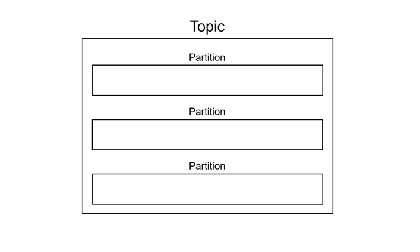
</div>

</script></section></section><section ><section data-markdown><script type="text/template">## MSKの型</script></section><section data-markdown><script type="text/template">### ストリームデータ型
<div style="font-size: 0.8em;">
    <p>
        ストリームデータは大規模かつ連続的に生成され、<br>
        リアルタイムかつ順序性を担保して処理されることで<br>
        価値を生むことが多い
    </p>
</div>

<div style="display: flex; justify-content: space-around;margin-top: -20px;">
  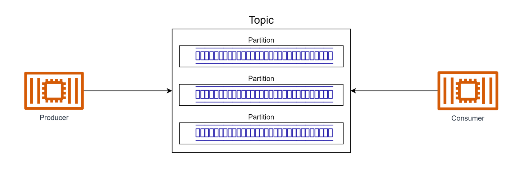
</div>

</script></section><section data-markdown><script type="text/template">### Pub-Sub
<div style="font-size: 0.8em;">
    <p>
        Producerが生成したデータを<br>
        複数のConsumerが受信することができる
</p>
</div>

<div style="display: flex; justify-content: space-around;margin-top: -20px;">
  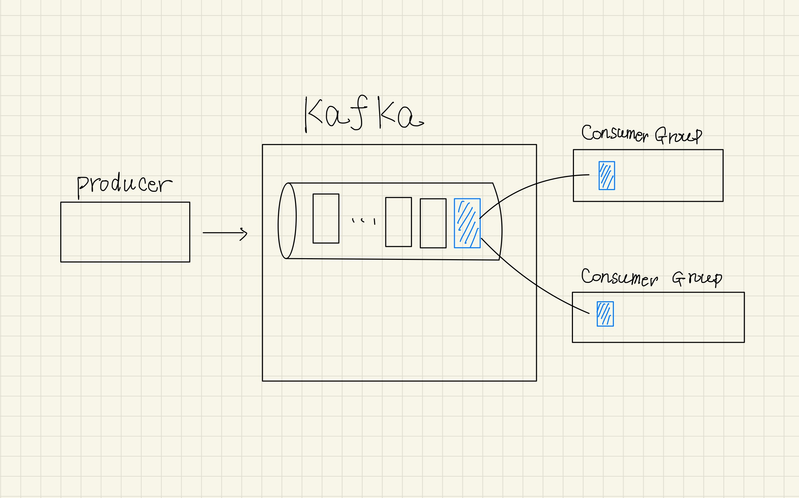
</div>

</script></section><section data-markdown><script type="text/template">### Pull型

<div style="font-size: 0.8em;">
    <p>
        データは一度kafkaに格納される<br>
        データの取得は、consumerが能動的に行う
    </p>
</div>

<div style="display: flex; justify-content: space-around;margin-top: -20px;">
  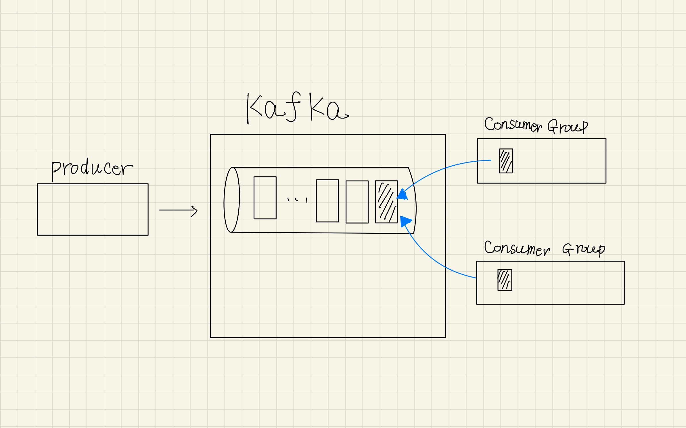
</div>
</script></section><section data-markdown><script type="text/template">### まとめ
<div style="font-size: 0.8em;">
    <p>
        連続したリアルタイムデータであるストリームデータを扱い、<br>
        同じデータを複数のConsumerが受信可能なPub-Sub型であり、<br>
        Consumerが能動的にデータを取得するpull型のサービス
    </p>
</div>

<div style="display: flex; justify-content: space-around;margin-top: -20px;">
  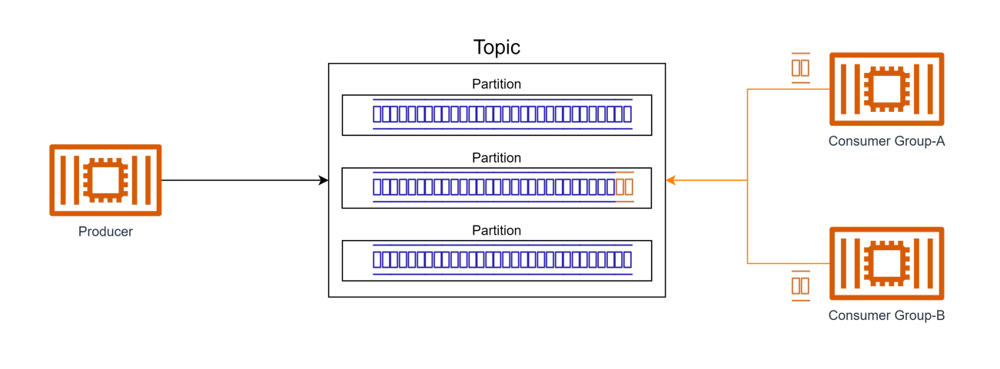
</div>


</script></section></section><section ><section data-markdown><script type="text/template">## Consumerグループ</script></section><section data-markdown><script type="text/template">### Pub-Subモデルの実現
<div style="font-size: 0.8em;">
    <p>
        Pub-Subモデルを実現するために、Consumer側で所属するConsumer-Groupを定義する<br>
        Consumer-Group単位でメッセージを受信する
    </p>
</div>

<div style="display: flex; justify-content: space-around;margin-top: -20px;">
  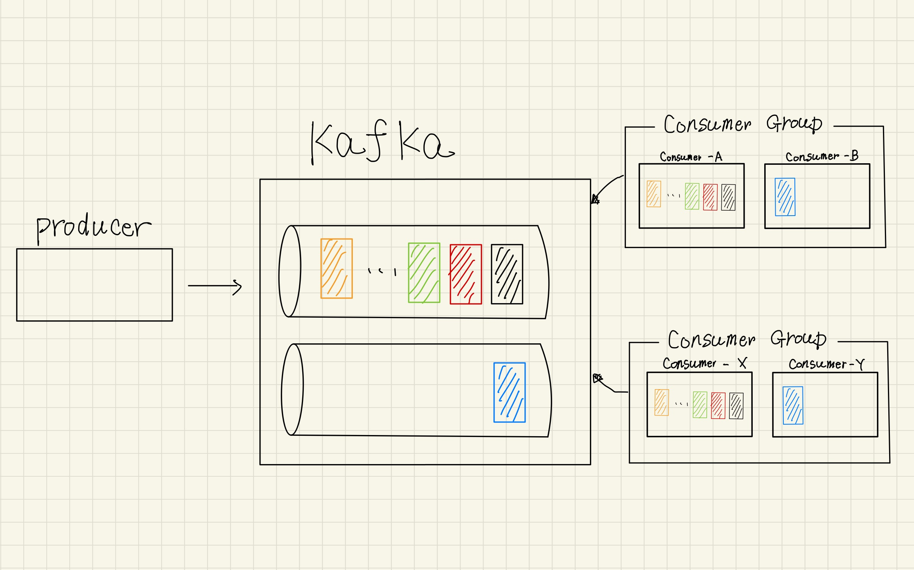
</div>


</script></section></section><section ><section data-markdown><script type="text/template">## offset</script></section><section data-markdown><script type="text/template">### ストリーム型データの扱い
<div style="font-size: 0.8em;">
    <p>
        ストリーム型のデータの処理順序を担保するため<br>
        offsetと呼ばれるメッセージのインデックスが付与される<br>
        kafkaではpartition単位でoffsetが払い出される
    </p>
</div>

<div style="display: flex; justify-content: space-around;margin-top: -20px;">
  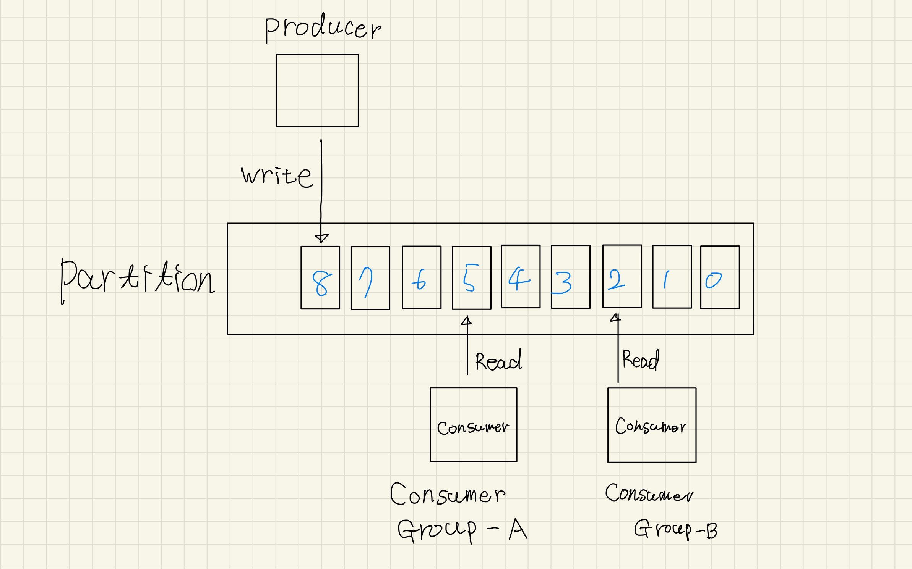
</div>
</script></section><section data-markdown><script type="text/template">### offsetの種類
<div style="font-size: 0.8em;">
    <p>
        Log-End-Offset:partitionの末尾のメッセージの番号<br>
        Current-Offset:consumerが読み込んだメッセージの番号<br>
        commit-Offset:consumerがコミットしたメッセージの番号
    </p>
</div>

<div style="display: flex; justify-content: space-around;margin-top: -20px;">
  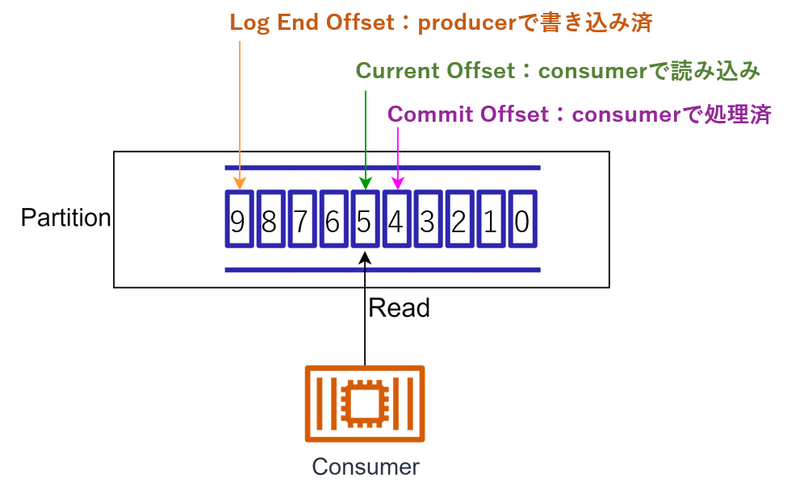
</div>

</script></section><section data-markdown><script type="text/template">### 正常処理時のoffset
<div style="font-size: 0.8em;">
    <p>
        consumerはcommit-offsetを確認<br>
        後続メッセージを取得してcurrent-offsetを更新する<br>
        正常終了した場合はcommit-offsetを更新する
    </p>
</div>

<div style="display: flex; justify-content: space-around;margin-top: -20px;">
  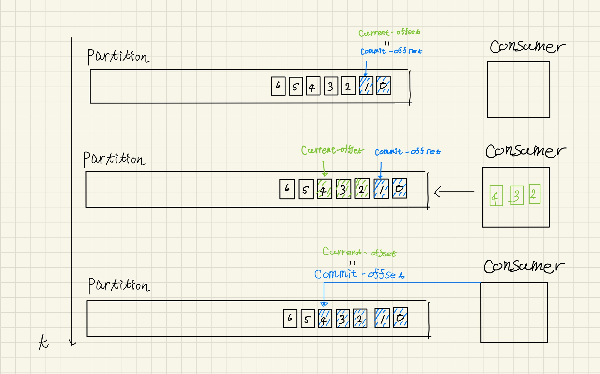
</div>

</script></section><section data-markdown><script type="text/template">### 処理失敗時のoffset
<div style="font-size: 0.8em;">
    <p>
        後続メッセージを取得して処理中に失敗した場合、<br>
        再起動した、consumerはcommit-offsetを再確認し、<br>
        その後続のメッセージを再度取得する
        <br>
    </p>
</div>

<div style="display: flex; justify-content: space-around;margin-top: -20px;">
  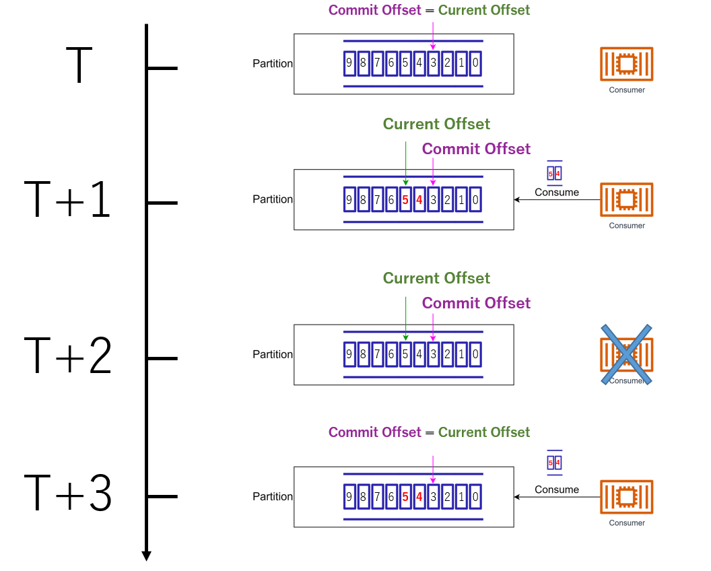
</div>


</script></section></section><section ><section data-markdown><script type="text/template">## offsetの管理</script></section><section data-markdown><script type="text/template">### __consumer_offsets
<div style="font-size: 0.8em;">
    <p>
        各トピック、各consumer-gruoupごとのcommit-offsetが<br>
        __consumer_offsetsに書き込まれている<br>
    </p>
</div>

<div style="display: flex; justify-content: space-around;margin-top: -20px;">
  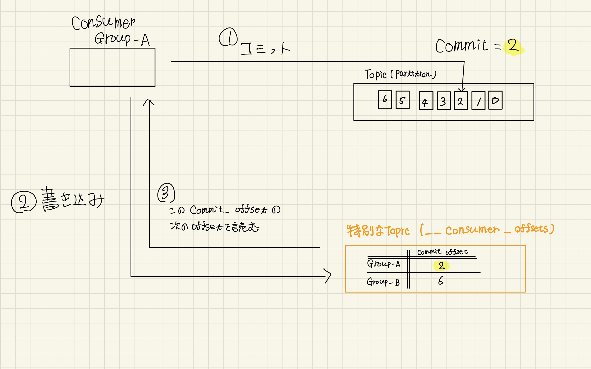
</div>


</script></section><section data-markdown><script type="text/template">### __consumer_offsetsの削除ポリシー
<div style="font-size: 0.6em;">
    <p>
        consumerGroupが活動しない期間が長いと、__consumer_offsetsの情報を削除する<br>
        この期間はoffsets.retention.minutesで指定さている(デフォルト7日)<br>
        commit-offsetが削除された際の挙動はauto-offset-resetの定義次第
    </p>
</div>

<div style="display: flex; justify-content: space-around;margin-top: -20px;">
  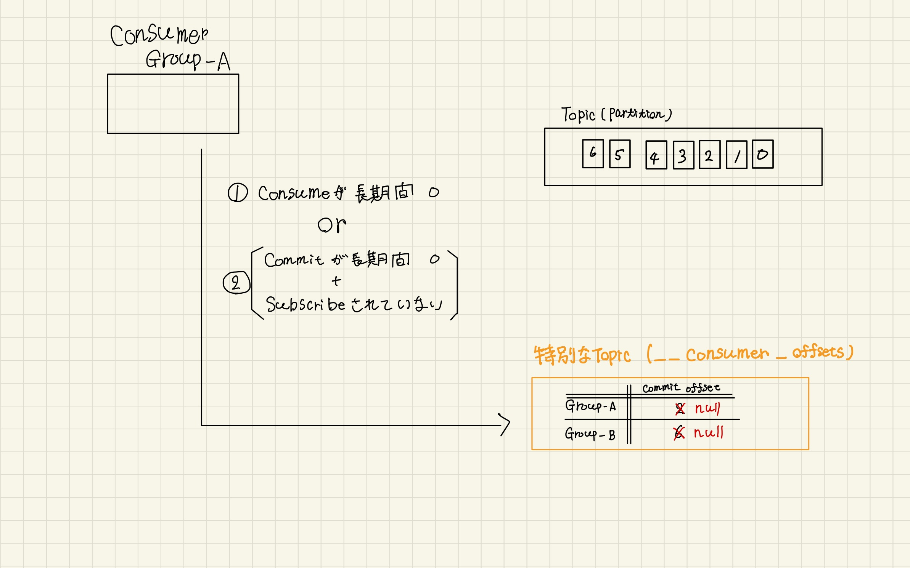
</div>

</script></section><section data-markdown><script type="text/template">### auto-offset-reset
<div style="font-size: 0.6em;">
    <p>
        consumerが既存のoffsetを見つけられない場合どのメッセージから消費するかの設定<br>
        earliest:トピックの最初のメッセージから消費する<br>
        latest:最新のoffsetからメッセージを処理、新しく到着するメッセージのみを消費する
    </p>
</div>

<div style="display: flex; justify-content: space-around;margin-top: -20px;">
  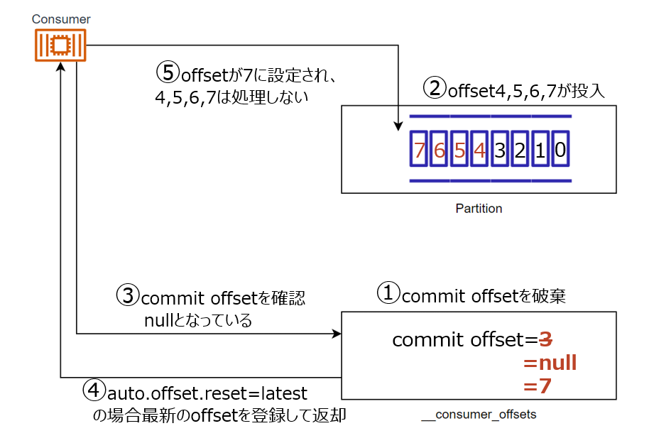
</div>

</script></section><section data-markdown><script type="text/template">### Lagについて
<div style="font-size: 0.6em;">
    <p>
        Topic単位で未処理データ数をLog-End-Offsetとcommit-offsetの差の和をとった<br>
        sumoffsetlagというメトリクスで取得できる<br>
        sumoffsetlagは__consumer_offsetsを参照し算出するためconsumerが0台でも算出可能
    </p>
</div>

<div style="display: flex; justify-content: space-around;margin-top: -20px;">
  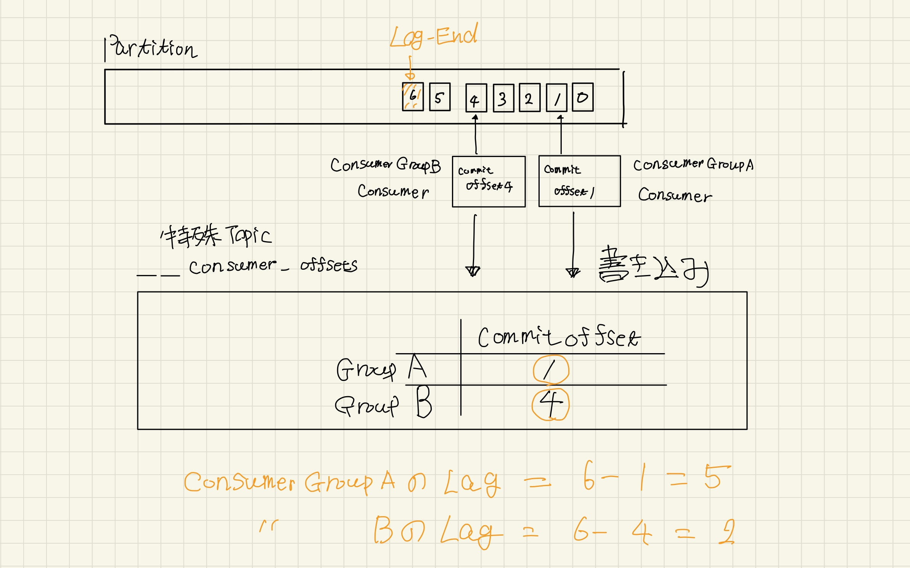
</div>
</script></section></section></div>
    </div>

    <script src="./dist/reveal.js"></script>

    <script src="./plugin/markdown/markdown.js"></script>
    <script src="./plugin/highlight/highlight.js"></script>
    <script src="./plugin/zoom/zoom.js"></script>
    <script src="./plugin/notes/notes.js"></script>
    <script src="./plugin/math/math.js"></script>
    <script>
      function extend() {
        var target = {};
        for (var i = 0; i < arguments.length; i++) {
          var source = arguments[i];
          for (var key in source) {
            if (source.hasOwnProperty(key)) {
              target[key] = source[key];
            }
          }
        }
        return target;
      }

      // default options to init reveal.js
      var defaultOptions = {
        controls: true,
        progress: true,
        history: true,
        center: true,
        transition: 'default', // none/fade/slide/convex/concave/zoom
        slideNumber: true,
        plugins: [
          RevealMarkdown,
          RevealHighlight,
          RevealZoom,
          RevealNotes,
          RevealMath
        ]
      };

      // options from URL query string
      var queryOptions = Reveal().getQueryHash() || {};

      var options = extend(defaultOptions, {}, queryOptions);
    </script>


    <script>
      Reveal.initialize(options);
    </script>
  </body>
</html>
